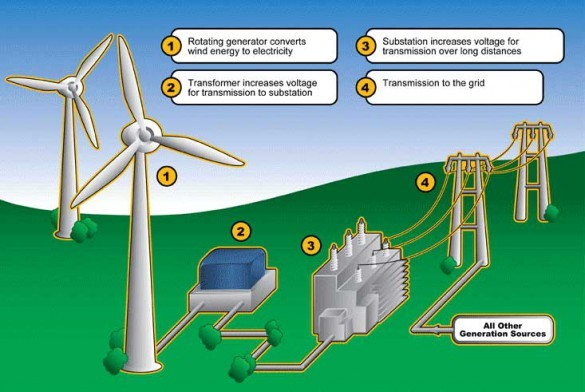
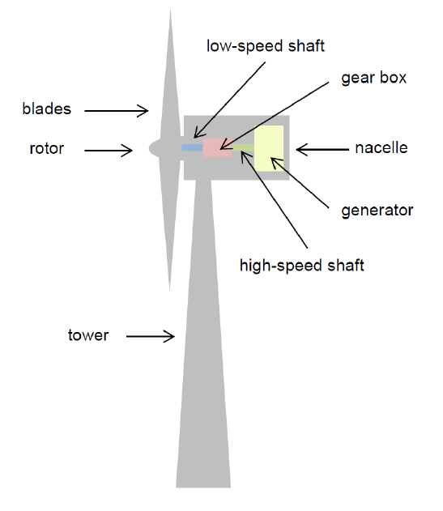

What is Wind Energy?
Wind energy is a form of renewable energy generated by converting wind flow into electricity using wind turbines. It’s one of the fastest-growing sources of energy globally due to its potential to reduce carbon emissions and reliance on fossil fuels.
How Wind Energy Works
Wind turbines capture the kinetic energy of wind and convert it into electricity. The wind turns the blades of the turbine, which spins a generator to produce electrical power.
Wind energy is one of the fastest-growing sources of renewable energy, especially in regions with strong winds.


Advantages
Job stability : The development of wind energy creates numerous
long-term and lucrative jobs in industries like component production, installation and
construction, upkeep and operations, legal and advertising services and more.
Independence from water : Wind turbines do not rely on
water to operate.
Versatility : Wind energy is suitable for multiple environments, such
as in agricultural or working landscapes. They can be installed in distant and rural areas
too.
Conservative land usage : Despite the immense height of
windmills, they do not take up as much space compared to solar systems.
Disadvantages
Noise pollution : The turbines of a windmill can produce loud noise and
create a disturbance to humans living nearby, even driving the prices of the nearby land and
properties down.
Visually unappealing : Due to their vertical massiveness, windmills can
ruin the aesthetics of a landscape. The flickering shadows cast during the rotation of the
blades are also disturbing to some.
Durability concerns : Wind turbines must be built to survive high wind
speeds while being able to generate energy with relatively weak winds.
Disturbance to wildlife : Birds and bats are susceptible to collisions
with
wind turbines. Consideration to the surrounding animals must be had during the construction
of wind systems.